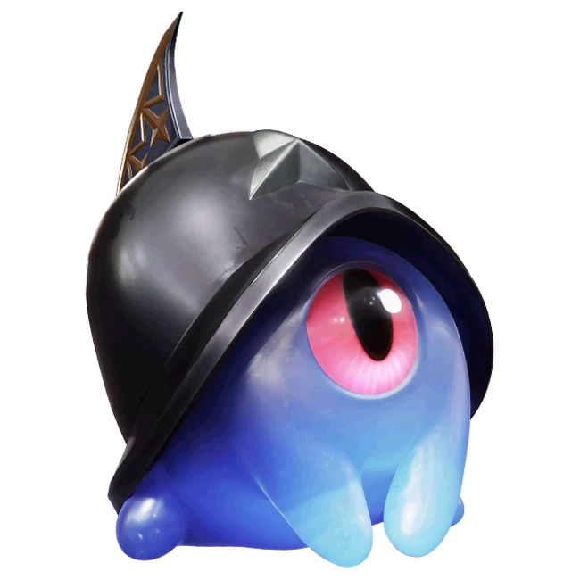

รายชื่อ Aniimo › #061

หมวกเกราะจิ๋ว (Helmut)
#061ธาตุมืดLuminBreakTier C
หมวกเกราะแข็งปกป้องร่างนุ่มนิ่ม ส่วนกรงเล็บปากที่ยืดได้ช่วยในการล่า
ดูรายละเอียดเต็ม ร่างพิเศษ และร่างเปล่งประกายค่าสถานะพื้นฐาน
| HP | 60 |
|---|---|
| ATK | 52 |
| P.DEF | 68 |
| M.DEF | 48 |
| REGEN | 51 |
| BREAK | 60 |
สกิล
| โจมตีปกติ | ATK มืด (BREAK) ใช้พลังมืดโจมตีเป้าหมายระยะประชิด |
| สกิล 1 | Guardbreak Slam มืด กระโดดขึ้นแล้วทุบลงใส่เป้าหมายทำดาเมจ ทุบติดต่อกันได้สูงสุด 3 ครั้ง ครั้งที่สามทำให้เป้าหมายมึน 1 วินาที |
| สกิล 2 | Ballistic Guard มืด เข้าสถานะ [Ballistic Guard] เพิ่มลดดาเมจ 20% และต้านการขัดจังหวะได้ดีมาก เมื่อถูกโจมตีจะปล่อยคลื่นกระแทกรอบตัว ทำดาเมจพลัง 10 ทำงานได้ไม่เกิน 1 ครั้งทุก 0.2 วินาที |
สายวิวัฒนาการ
- หมวกเกราะจิ๋ว → อัศวินเบี้ย (Aniimo เลเวล 45, ดึงดาบแห่งความกล้าหาญ (Sword of Bravery) ออกมา)
- หมวกเกราะจิ๋ว → อัศวินน้องใหม่ (Aniimo เลเวล 45, ชนะคู่ต่อสู้ด้วยดาเมจจากการสวนกลับ (Counter) ในโหมดป้องกัน, เรียนพรสวรรค์ติดตัว [Unwavering Rampart])
จุดเกิด
- Russet Highlands Lv. 45–50
Held Item ที่แนะนำ
- Gargantuan Horn Aniimo ที่สวมใส่ได้ BREAK เพิ่ม 0.7 ต่อเลเวล
งานใน Homeland
งานธาตุมืด Lv.1, ขนของ Lv.1